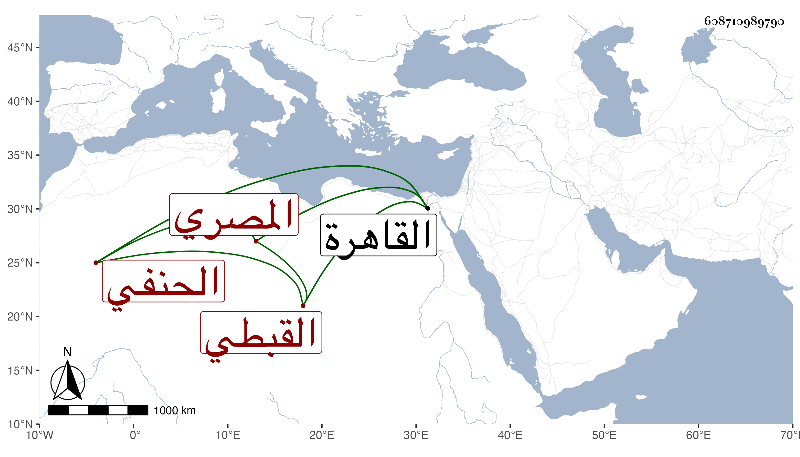

0902Sakhawi.DawLamic.ITO20230111-ara1.EIS1600.608710989790
Biography ID: 608710989790
384
عبد الوهاب بن عبد الله المدعو ماجدا بن موسى بن أبي شاكر أحمد بن أبي الفرج إبراهيم بن سعيد الدولة تقي الدين بن الفخر بن التاج بن العلم بن التاج القبطي المصري الحنفي ويعرف كسلفه بابن أبي شاكر . ولد سنة سبعين أو في التي بعدها بالقاهرة ونشأ في حجر السعادة واشتغل بالفقه وغيره وتميز في الكتابة وتنقل في المباشرات إلى أن باشر نظر ديوان المفرد في آخر الدولة الظاهرية حتى مات وكذا باشر استادارية الأملاك والذخائر والمستأجرات والأوقاف وعظم عند الناصر بحسن مباشرته ثم ولي نظر الخاص بعد موت المجد بن الهيصم ثم قبض عليه في جمادى الأولى سنة ست عشرة وصودر على أربعين ألف دينار باع فيها موجوده وبقي في الترسيم بشباك البرقوقية يستحذى من كل من يمر به من الأعيان حتى حصل مالا له صورة وأفرج عنه وأعيد إلى مباشرة الذخيرة والأملاك ثم قرر في الوزارة بعد صرف التاج بن الهيصم فباشرها مباشرة حسنة وشكره الناس كلهم وحدث في وزارته الوباء فلم يشاحح أحدا في وارثه بحيث كثر الدعاء له ولكن لم تطل مدته بل مات بعد تسعة أشهر وذلك يوم الخميس حادي عشر ذي القعدة سنة تسع عشرة وكان بعيدا من النصارى متزوجا من غيرهم وهي علامة حسن إسلام القبطي سيما مع كثرة فعله الخير والصدقة ومحبته في أهل العلم وأن كان منهمكا في اللذات شديد الوطأة على العامة موصوفا بالدهاء وبالجملة فقد باشر الوزارة برفق لم يعهد مثله وكان عارفا بالمباشرة جيد الكتابة . ذكره شيخنا في إنبائه وهو صاحب المدرسة التي بين السورين ظاهر القاهرة وقف عليها عدة أوقاف والرباط المقابل لباب جياد من المسجد الحرام ولكنه لم يكمل فكمله الفخر بن أبي الفرج عفا الله عنهما ، وطول المقريزي في عقوده ترجمته .
